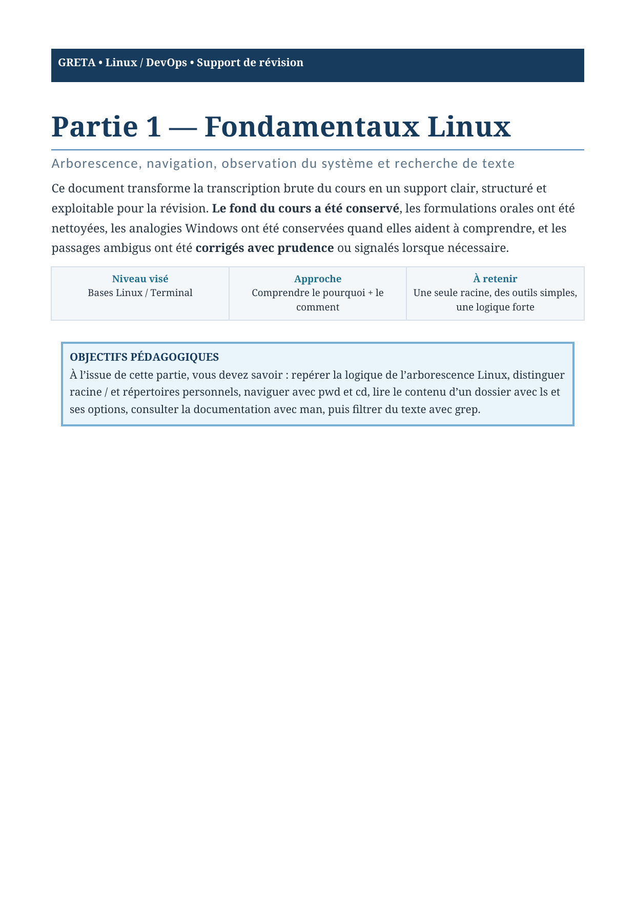
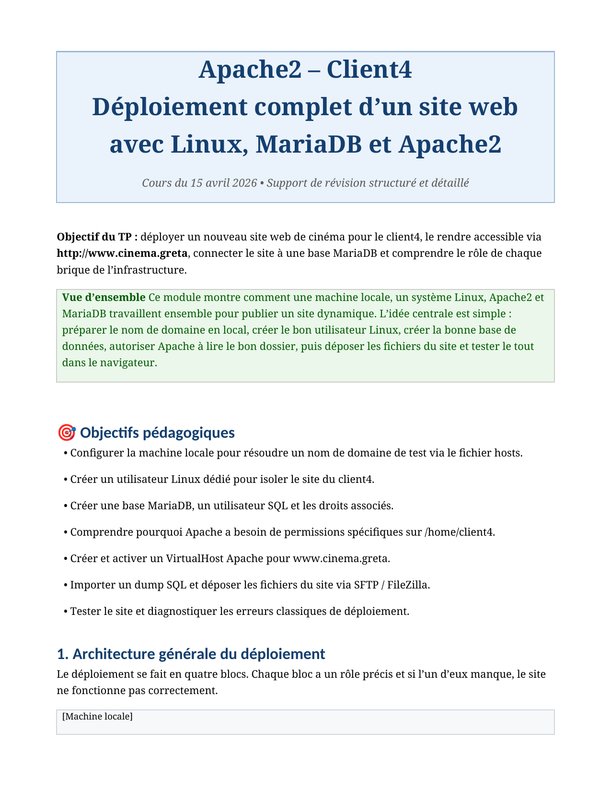
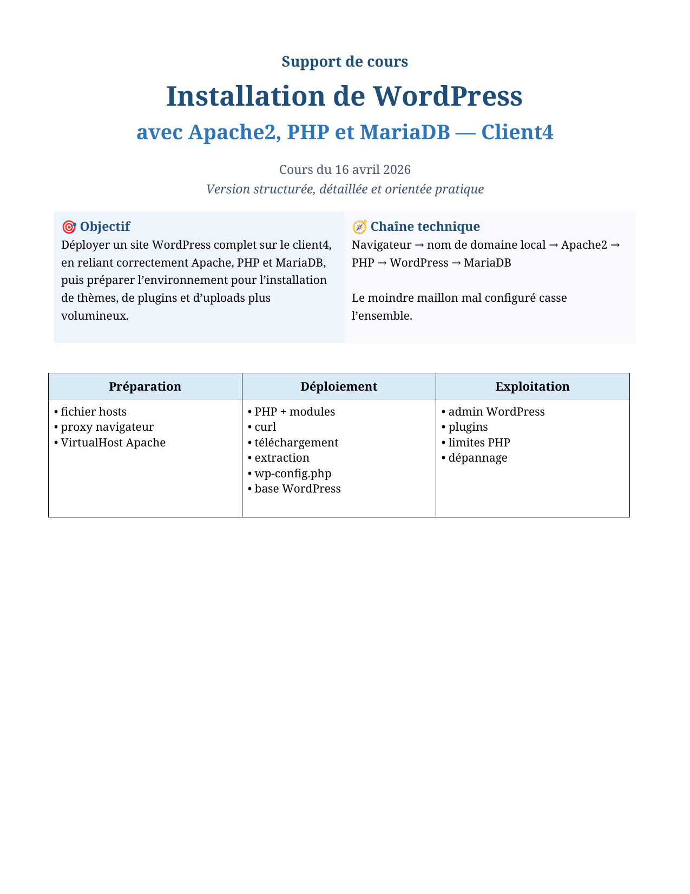
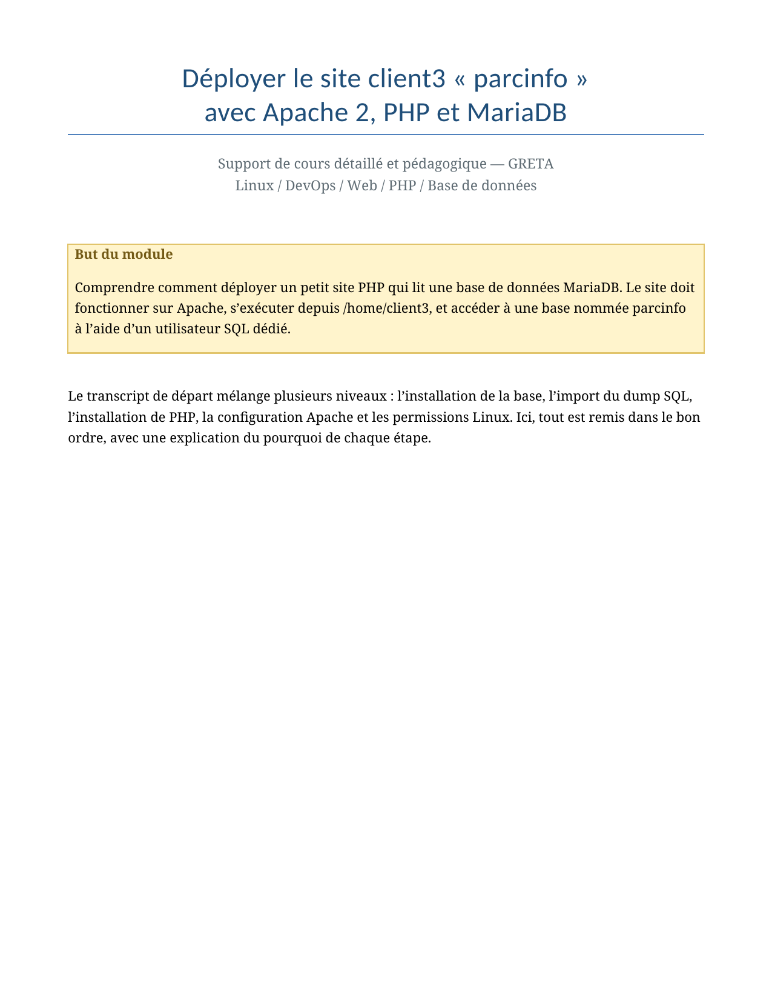
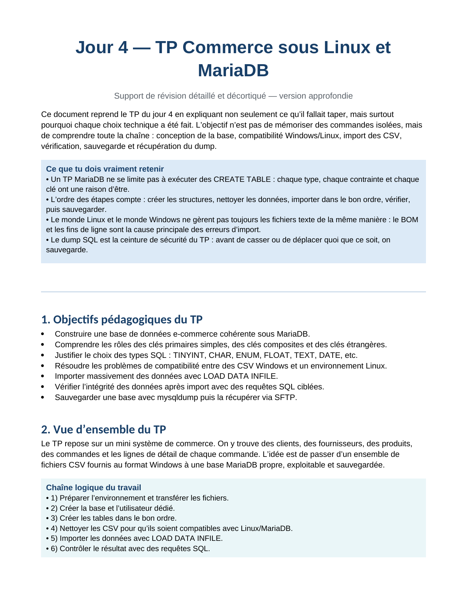

Preview du premier vertical slice
GRETA ANALYSTE CYBERSÉCURITÉ
Une plateforme d'apprentissage premium qui centralise les supports GRETA tout en montrant, dans l'interface elle-même, l'usage appliqué de WordPress, PHP, MariaDB, Apache2, Tailwind CSS, Alpine.js et HTML.
11
learning paths normalisés
29
PDF issus du dossier GRETA
233
pages de matière structurées
Pourquoi ce projet existe
Le dossier source ne devait pas rester un amas de fichiers.
Le projet part d'un vrai dossier local GRETA composé de supports Linux, réseau, MariaDB, Apache, PHP, WordPress et Nginx. La plateforme transforme ce corpus en système lisible : parcours, modules, ressources, liens techniques et narration de stack.
Le résultat raconte deux choses à la fois : comment apprendre et comment construire avec ce qui est appris.
Learning paths archive preview
Parcours structurés à partir du corpus réel.
Développement PHP
Applications web dynamiques, MariaDB, validation et WordPress.
Parcours stratégique du produit. Il s'appuie sur les supports déjà présents et ajoute une structure sérieuse pour les fondamentaux PHP qui doivent être visibles dans un portfolio.
WordPress sur Apache/PHP/MariaDB
Déploiement de WordPress comme chaîne technique complète.
VirtualHost Apache, modules PHP, base dédiée, `wp-config.php`, permissions, uploads et installation finale.
Apache2 : déploiement & multisites
VM, proxy APT, VirtualHosts, sites clients et séparation des contenus.
Du serveur tout juste préparé au serveur multi-clients, cette piste structure la couche web étudiée pendant la formation.

Administration MariaDB
Sécurisation, utilisateurs, privilèges, sauvegarde et restauration.
La logique de comptes dédiés, de droits ciblés et de dump SQL alimente directement l'identité technique du produit.
PHP path detail preview
Le produit montre où le PHP appris devient PHP pratiqué.
Le parcours PHP agrège le déploiement de `parcinfo`, les liens avec MariaDB, les entrées utilisateur, la validation, la réécriture d'URL et le contexte WordPress. Il assume aussi une partie future-ready quand le corpus ne couvre pas encore tout le langage de manière homogène.
Architecture d'un site PHP + MariaDB
Navigateur, Apache, script PHP, base `parcinfo`, utilisateur SQL dédié et paramètres imposés par le code.
PHP coeur de langage
Structure prévue pour variables, conditions, boucles, tableaux et fonctions.
Entrées utilisateur et sécurité
Formulaires, superglobales, sessions, cookies, validation, sanitization et échappement.
PHP relié au serveur et au CMS
URL rewriting sous Apache, accès base, et compréhension de WordPress comme application PHP.
Detail views preview
États de pages prêts à être ouverts localement.
Path
Parcours PHP
Vue détaillée avec modules, outcomes et supports reliés.
Module
Module Architecture
Objectifs, leçons, séquence et ressources sources.
Lesson
Leçon index.php
Objectifs, notes, concepts et navigation pédagogique.
Resource
Ressource Parcinfo
Fiche PDF, domaines couverts et parcours reliés.
Applied stack
Le site dit explicitement avec quoi il est construit.
WordPress
Socle CMS, admin éditoriale et structure des contenus.
PHP
Rendu serveur du thème, logique du plugin et narration produit.
MariaDB + Apache2
Chaîne de déploiement étudiée puis appliquée au produit.
Tailwind + Alpine + HTML
Système visuel premium et interactivité légère pour le frontend.
Dashboard preview
Synthèse rapide du corpus et de la trajectoire produit.
36
modules structurés
78
lessons normalisées
7
briques stack visibles